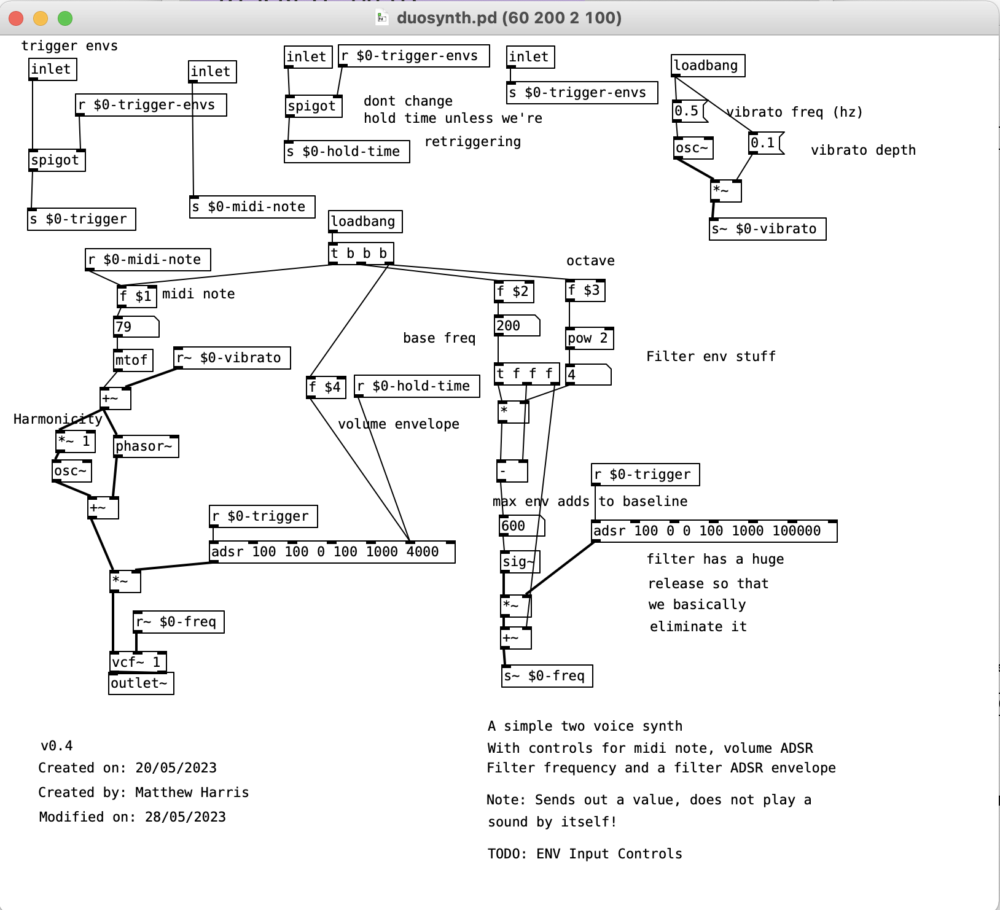

Note: this has only been tested on macOS at this stage - so may not work on Windows / Linux (but maybe it will!)
All of the dependencies are bundled into the zip folder, so it should run without having to modify any pure data paths
Usage
Unzip the downloaded archive and open the discrete.pd
Patch Breakdown
This is probably the most complex patch I've made in pure data...
Diagram for the original Discrete Music found in the vinyl liner notes
(Image stolen from here)
Front End
I wanted to hide the monstrosity of the underlying patch away behind a vaguely nice front end.
The big green button starts / stops the whole thing.
The horror begins...
This is the main subpatch which glues together all of the various abstractions which make up the system
Hopefully its not too difficult to follow the flow through this subpatch.
Basically the big green toggle button from earlier resets the clock when its set to "ON" and outputs sixteenth notes at a
frequecy specified by the BPM.
These sixteenth notes are picked up by the "Loop Counters".
The loop counter allows us to specify a loop of an arbitary number of measures & outputs the absolute time from the beginning of the loop
that we are currently at.
The loop time resets to zero when the specified number of measures has elapsed
This allows the system to scheduling repeating events in time.
Sequencing
Now that we have a way of constructing loops of a specified length we can begin to start thinking about sequencing events.
This diagram shows the sequence for the left hand audio channel.
Each event is made up of:
Start time
Midi note
Duration
Retrigger flag
These events will be triggered sequentially, based on their Start Time
The logic for determininng when to trigger the event is handled by the Note Event abstraction:
The logic here is fairly primitive and simply checks if the current loop time matches the start time
Emitting the note event message when true.
Synthesize Me

The note events are used to trigger the Duosynths (of which there are two, one for each channel)
This follows a fairly standard subtractive synth architecture.
It is made up of two sawtooth waves running at the same frequency, with a small amount of subtle vibrato added
There are two envelopes controlling the volume contour and filter cutoff frequency respectively
Echo & Frippertronics
This is really the core of the whole idea. There are two separate delay processes going on.
The first is just a simple sixteenth note echo with a small amount of feedback
The second is a much longer (~6.0s) delay with a much higher feedback, which results
in our sounds repeating in time, cascading and swelling up over each other.
The patch for each is the same, all that differs is the delay time & feeback parameters